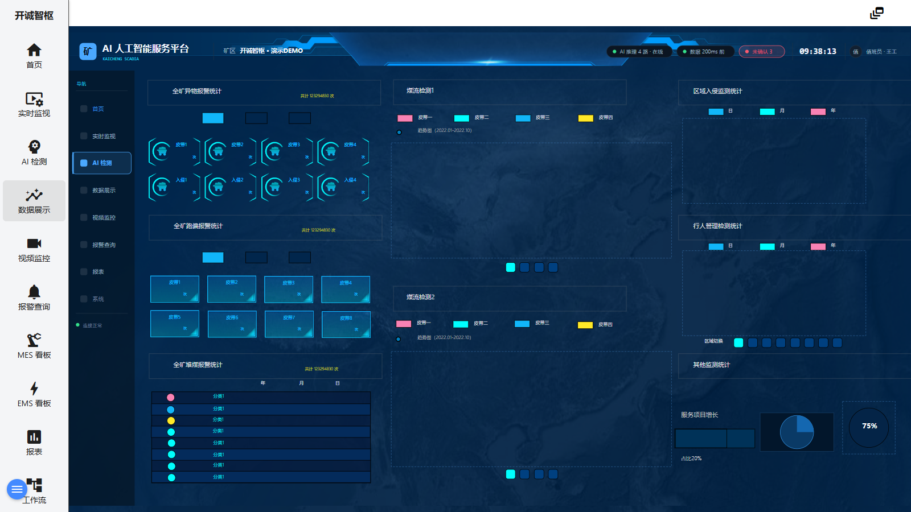

数据展示画面是全矿 AI 报警与监测数据的统计汇总页：左侧三块全矿级报警统计（异物 / 跑偏 / 堆煤）支持年/月/日口径切换；中部为长周期煤流趋势图（两条检测序列、四条皮带）；右侧为区域入侵、行人管理、其他监测三类统计与一张服务占比环图。适合管理人员定期查阅整体态势。

图 4-1 数据展示画面（当前交付版实际截图）
| 区域 | 说明 |
|---|---|
| ① 全矿异物报警统计（左上） | 大数显示「共计 123294830 次」，右侧年 / 月 / 日三个口径切换按钮；下方为皮带1～4 与入侵1～4 的分项计数（单位：次）。 |
| ② 全矿跑偏报警统计（左中） | 结构与①相同：总计次数 + 年/月/日切换 + 皮带1～8 分项计数。 |
| ③ 全矿堆煤报警统计（左下） | 同上结构，统计堆煤类报警。 |
| ④ 趋势图（中部） | 标题「趋势图（2022.01-2022.10）」，含煤流检测1、煤流检测2两条序列，横轴为时间，四条皮带（皮带一/二/三/四）曲线对比。 |
| ⑤ 区域监测统计（右列） | 三块统计卡：区域入侵监测统计、行人管理检测统计、其他监测统计，各带日 / 月 / 年切换。 |
| ⑥ 区域切换 | 右侧「区域切换」按钮组，可切换右侧统计的区域口径。 |
| ⑦ 服务项目增长（环图） | 右下环形图，标注「服务项目增长」「占比20%」「75%」等占比信息。 |
| ⑧ 画面内导航 | 同第 1 章④，可点击切换到 AI 检测 / 视频监控 / 报警查询等画面。 |